Books beginning
65 books
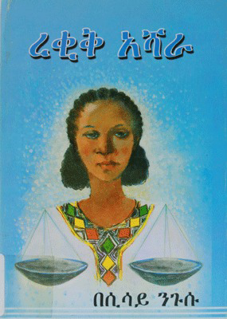
ረቂቅ አሻራ reqiq ashara ሲሳይ ንጉሡ · 2006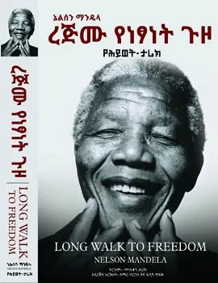
ረጅሙ የነፃነት ጉዞ rejmu yenetsanet guzo ሙሉቀን ታሪኩ · 2013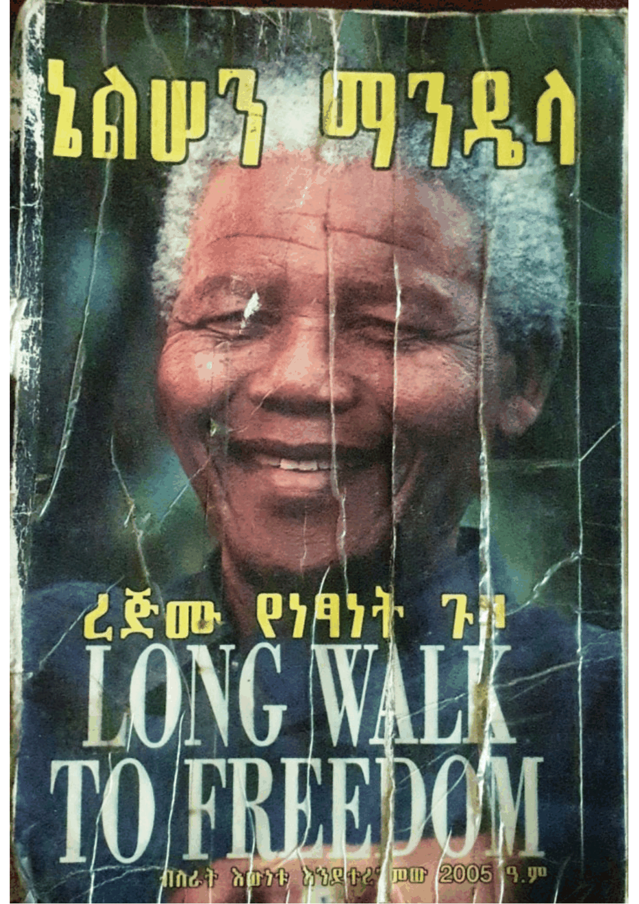
ረጅሙ የነፃነት ጉዞ rejmu yenetsanet guzo ኔልሰን ማንዴላ, ብስራት እውነቱ · 2012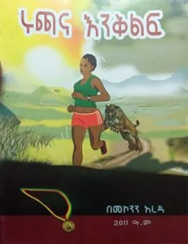
ሩጫና እንቅልፍ ruchana eneqelef መኮንን አረዳ · 2019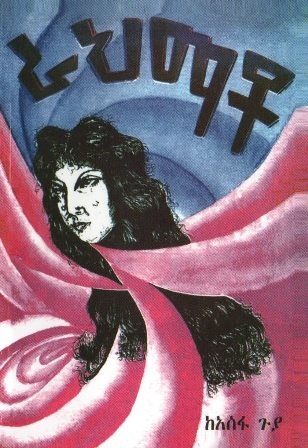
ራህማቶ rahmato አሰፋ ጉያ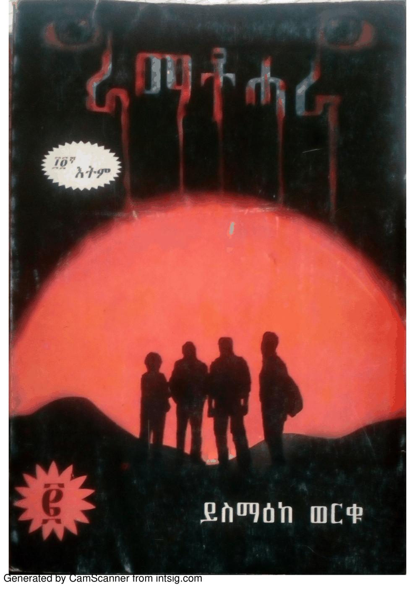
ራማቶሓራ RAMATOHARA ይስማዕከ ወርቁ · 2012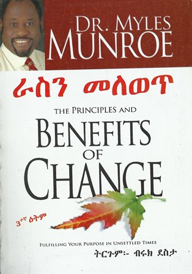
ራስን መለወጥ rasen melewet ብሩክ ደስታ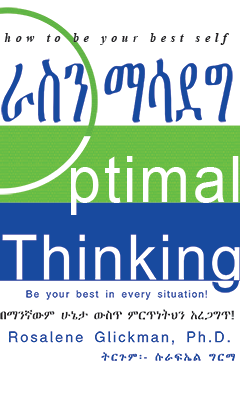
ራስን ማሳደግ rasen masadeg ዩኒቲ መፅሐፍ መደብር ፋሲካ · 2009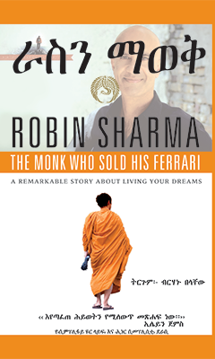
ራስን ማወቅ rasen maweq ዩኒቲ መፅሐፍ መደብር ፋሲካ · 2013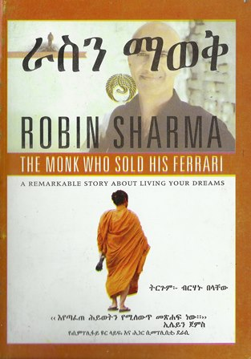
ራስን ማወቅ rasen maweq ብርሃኑ በላቸው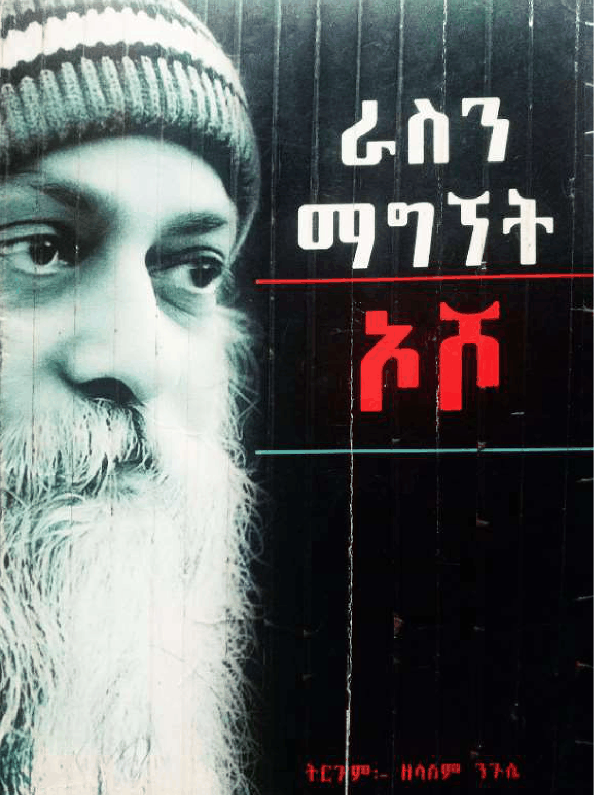
ራስን ማግኘት rasen magnyet ኦሾ, ዘላለም ንጉሴ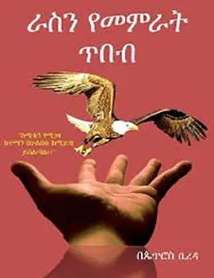
ራስን የመምራት ጥበብ rasen yememrat tebeb ዶር እዮብ ማሞ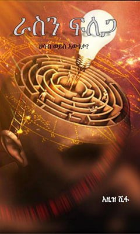
ራስን ፍለጋ rasen felega አዚዝ ሺፋ · 2015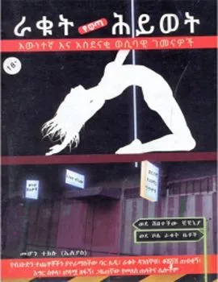
ራቁት ሕይወት እውነተኛ እና አስደናቂ ወሲባዊ ገመናዎች raqut heywet ewnetenya ena asdenaqi wesibawi gemenawoch መሆን ተክሉ (ኤልያስ) · 2015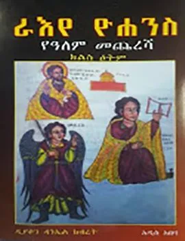
ራእየ ዮሐንስ የዓለም መጨረሻ raye yohenes yealem mecheresha ዲያቆን ዳንኤል ክብረት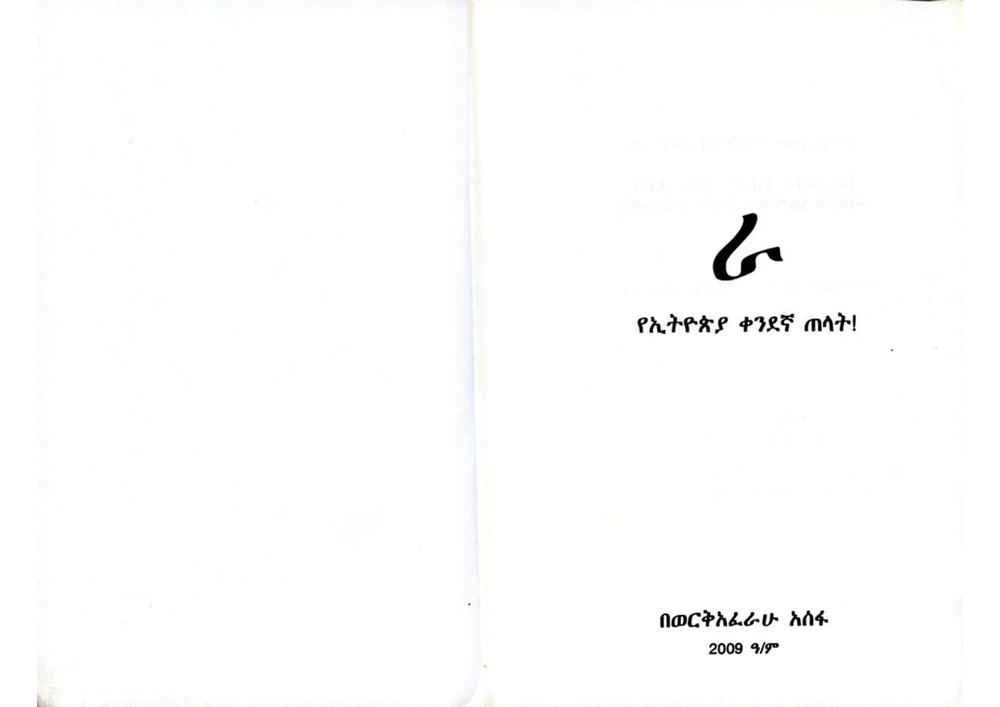
ራ የኢትዮጵያ ቀንደኛ ጠላት! ra yeityopya qendenya telat! ወርቅአፈራሁ አሰፋ · 2016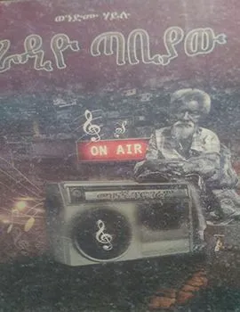
ራድዮ ጣብያው radyo tabyaw ወንድሙ ሀይሉ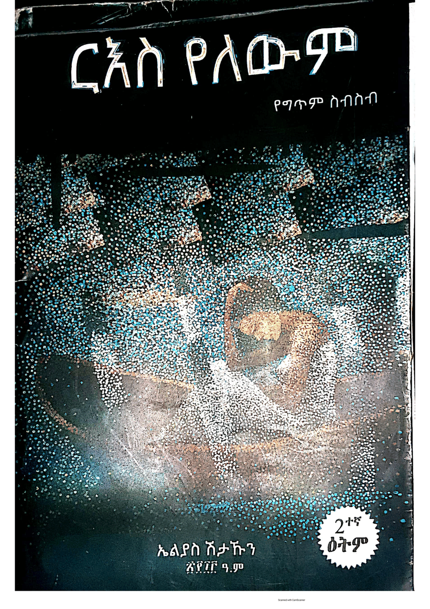
ርእስ የለውም rees yelewem ኤልያስ ሽታኹን · 2020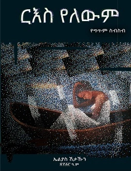
ርዕስ የለውም rees yelewem ኤሊያስ ሽታሁን · 2013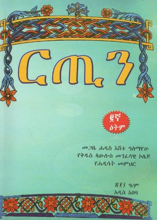
ርጢን retin መጋቤ ሐዲስ እሸቱ ዓለማየሁ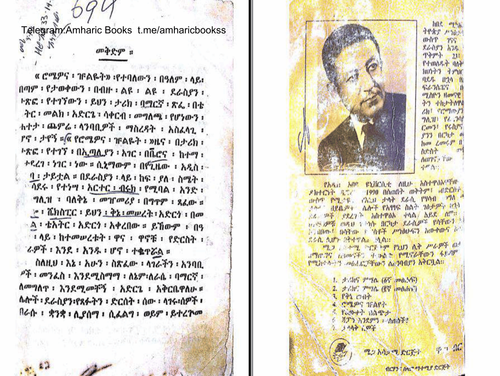
ሮሜዎና ዡልዬት romewona zhulyet ከበደ ሚካኤል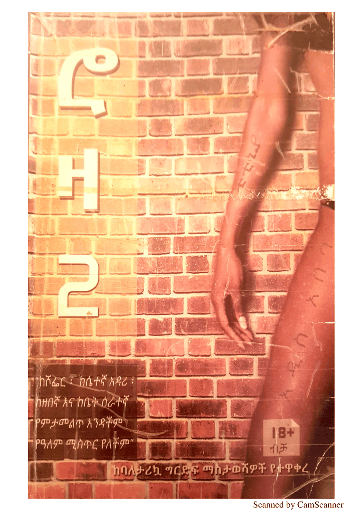
ሮዛ-2 roza-2 ሮዛ ደይነቃቸው, ፍጹም ብርሃኔ · 2007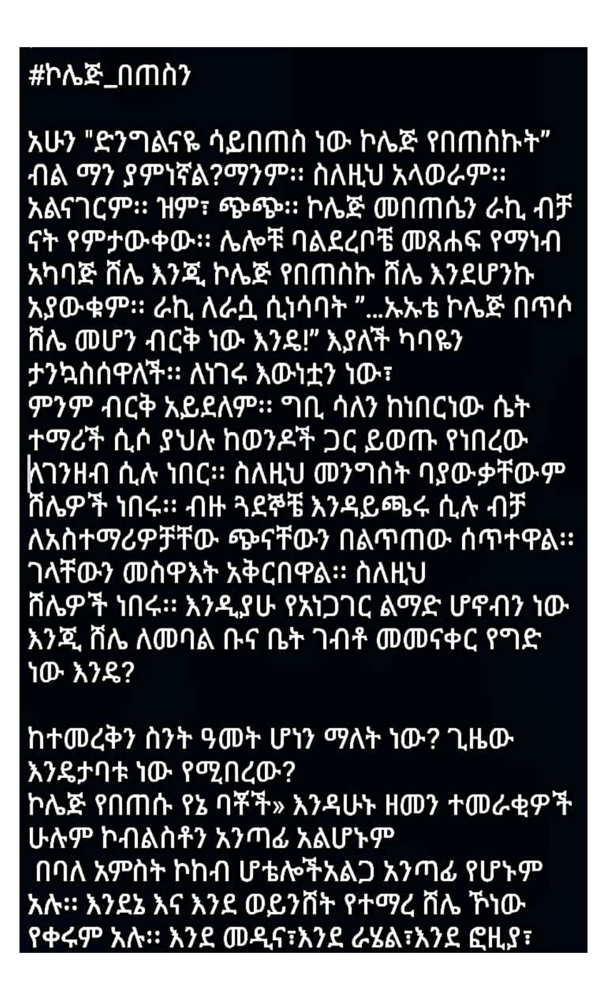
ሮዛ ቁ.1 roza qu.1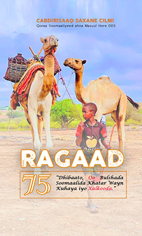
RAGAAD አብዲረዛቅ ሰሀኔ ኢልሚ · 2016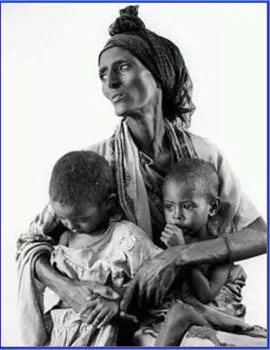
Rakkinni Haa Rakkatu Abdiisaa Ejjetaa Uuchee · 2020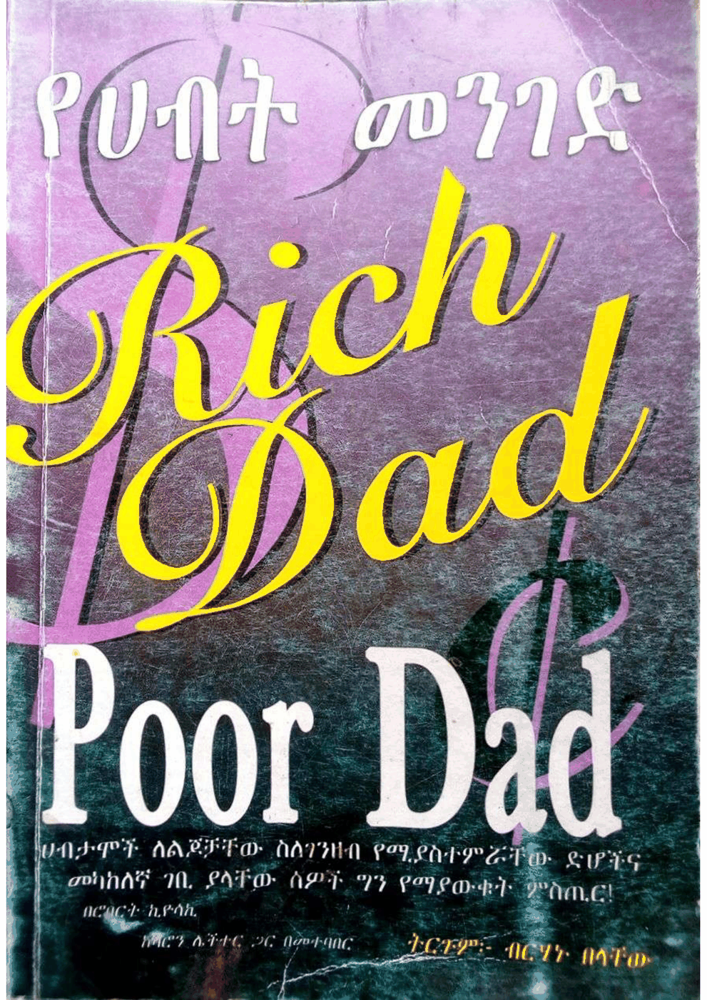
የሀብት መንገድ Rich Dad Poor Dad ሮበርት ኪዮሳኪ, ሻሮን ሌችተር, ብርሃኑ በላቸው · 2015